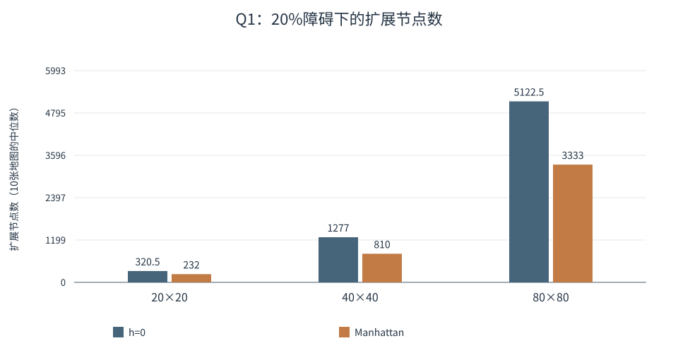
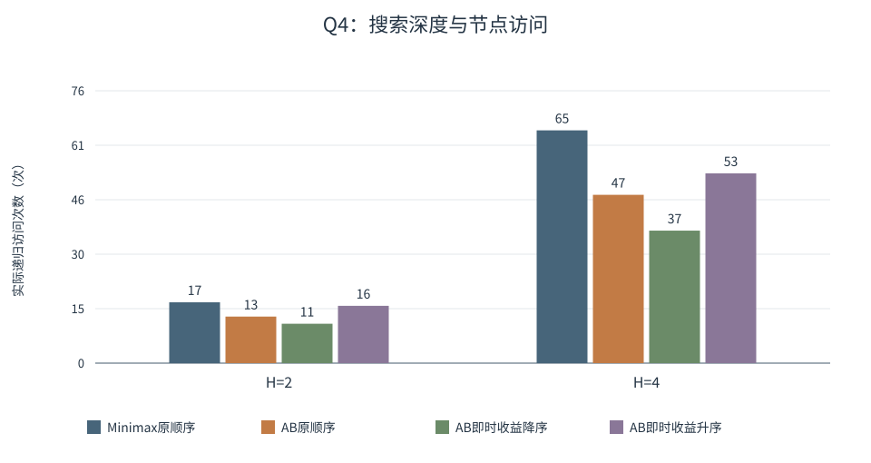

当代人工智能实验课
实验二：搜索算法
姓名：刘毅 学号：10245501453
1. 实验目的
本实验实现 A*、Minimax 和 Alpha-Beta，并将路径搜索与博弈搜索结合，解决加权地图上的宝藏分配问题。除了检查题目给出的结果，我还比较启发函数、搜索深度和访问顺序带来的搜索开销，重点观察节点数变化能否转化为实际时间收益。
2. 实验环境与总体设计
代码使用 Python 标准库实现，主要用到 heapq、dataclasses、unittest 和 perf_counter()。实验在 Windows 环境完成，不同验证记录的范围如下。
表1 运行环境及验证范围
| 验证内容 | Python版本 | 范围 |
|---|---|---|
| 题目一、二的初次验证 | 3.11.9 | 20个自动测试 |
| 四题完整验证 | 3.12.14 | 62个自动测试 |
| 本文正式性能对照 | 3.12.14 | 地图、博弈树、综合题及缓存实验 |
四题分别处理单位代价寻路、加权寻路、给定博弈树和竞争宝藏分配。路径搜索与博弈搜索使用独立的统计结构，便于比较同类算法。题四先计算地标间距离，再进行博弈搜索，使后续状态转移只需查表。
正式对照使用固定输入和种子。题一每组10张可达随机图，题二每组也为10张；无解地图只记录后重新生成，没有人为挖通道路。题一基础种子为20261015，配置依次为20×20/20%、40×40/20%、80×80/20%、40×40/10%、40×40/30%，每个配置的基础数加10000；每次尝试再加尝试编号。题二基础种子为20261115，配置为20×20/20%和40×40/20%，采用相同规则。地图权值和障碍、完整自设树均已保存，便于复现。
计时先预热两次，再轮换各方法的执行先后。每张地图重复31次；小型博弈树和题四搜索重复1001次；缓存对照与距离预计算重复101次，取中位数。地图组的时间先逐实例取中位数，再对10个实例取中位数；节点数始终来自单次执行，再按实例汇总。外部生成输入及独立参考验证不计入算法时间。
3. 搜索算法设计
3.1 A*搜索
A*的状态是坐标 (row,col)。g(n) 表示当前已知从起点到n的最小费用，h(n) 估计n到目标的剩余费用，优先级为 f(n)=g(n)+h(n)。优先队列每次弹出f较小的状态；相同f按入堆先后处理，邻居顺序固定为上、下、左、右。
实现中为每个坐标保存最优g和父节点。只有发现更小的g才更新父节点并入堆；旧堆条目出队时若g已过期，直接跳过。目标有效出队后，沿父节点逆向恢复完整路径。这样既保留后来发现的更优路线，也避免同一旧状态被无意义地反复扩展。
题一中g是已走步数，h为曼哈顿距离。题二中g是进入地形的累计费用，需要修正终点免费对h的影响。h=0作为对照，相当于按累计费用进行一致代价搜索。
3.2 Minimax
Minimax按深度优先顺序访问全部子节点。叶节点返回给定分数；MAX节点取子值最大值，MIN节点取最小值，再将结果向上回传。题三默认根为MAX，访问顺序为从左到右。纯Minimax不使用剪枝或结果缓存，因此同一完整树的访问总量不会因子节点重排而减少。
3.3 Alpha-Beta剪枝
Alpha-Beta保留Minimax的回传规则，同时维护alpha和beta。alpha表示MAX当前已能保证的下界，beta表示MIN当前已能保证的上界。MAX得到更高值时更新alpha，MIN得到更低值时更新beta；当 alpha >= beta，后续子节点已经不可能改变上层的选择，就停止访问它们。
例如MIN已有一个值为5的孩子，再搜索另一个MAX孩子时，如果该MAX首先找到6，那么它最终只会得到不小于6的值。MIN已有5可选，不需要继续知道这个MAX究竟是6还是9。这正是题三官方样例中一次剪枝的依据。两算法默认均从无穷宽窗口开始，返回精确的最优值。
3.4 性能统计口径
表2 主要指标
| 指标 | 定义 |
|---|---|
| expanded_nodes | 有效出队并扫描邻居的次数，不含目标和过期条目 |
| generated_nodes | 入堆次数，含起点和改善g后的再次入堆 |
| visited_nodes | 实际递归进入次数，含根、内部节点和终止状态 |
| evaluated_leaf_nodes | 读取叶值或计算终止状态U的次数 |
| prune_events | 确实跳过后续子节点的剪枝事件次数 |
| pruned_children | 直接跳过的子节点数，不累计其全部后代 |
| elapsed_time | perf_counter测得的墙钟秒数，报告换算为ms |
剪枝事件数与跳过的child数分开记录。prune_count是pruned_children的别名；在最后一个孩子后满足界限、但没有跳过任何孩子时，不计剪枝事件。generated是入堆次数，不是唯一坐标数，不能直接与visited或expanded混用。
4. 题目一：迷宫寻路
4.1 实现方法
地图只允许四方向移动，X为障碍，每步费用为1。曼哈顿距离为 |r-r_E|+|c-c_E|，它没有计入绕过障碍的额外步数，因此不会高于真实最短距离。函数返回包含起终点的坐标列表，无解返回空列表；合法的同起终点情况返回仅含起点的列表。
4.2 官方样例结果
起点为(0,0)，终点为(3,4)。程序返回：
(0,0) → (0,1) → (0,2) → (1,2) → (1,3) → (1,4) → (2,4) → (3,4)路径包含8个坐标，共7步。两种模式都得到最优步数7；h=0扩展16个节点，Manhattan扩展13个。测试检查起终点、四邻接、障碍和最优长度，不要求坐标序列必须与样例完全相同。
4.3 h=0与Manhattan对照
图1展示20%障碍下三种尺寸的扩展节点数。这里比较的是每组10张地图的中位数，而不是某一次运行的偶然结果。

图1 地图规模变化下的扩展节点对照
4.4 地图规模与障碍密度实验
表3保留精确节点数及最短步数。障碍比例是生成时的目标概率，实际比例随随机样本波动；性能比较只纳入可达实例。所有最优步数都经独立BFS核对。
表3 Q1随机地图实验（每配置10张）
| 尺寸 | 目标障碍概率 | 最短步数中位数 | h=0扩展中位数 | Manhattan扩展中位数 |
|---|---|---|---|---|
| 20×20 | 20% | 38 | 320.5 | 232 |
| 40×40 | 20% | 78 | 1277 | 810 |
| 80×80 | 20% | 158 | 5122.5 | 3333 |
| 40×40 | 10% | 78 | 1441 | 1270 |
| 40×40 | 30% | 80 | 1063.5 | 400.5 |
4.5 结果分析
在20%障碍下，Manhattan减少的扩展中位数从20×20时的88.5，增加到40×40时的467、80×80时的1789.5。较大地图里，使用目标方向信息可以省去更多扩展。但这些是组内中位数之差，并不等于逐实例节省量的中位数，相对节省也没有随尺寸单调增加。
固定40×40时，本批10%、20%、30%样本中的相对节省增加。不过，h=0本身的扩展中位数也从1441降到1063.5，说明障碍同时缩小了可达区域。地图更密还可能造成绕行或无解。因此不能把观察结果概括为“障碍越多，A*效果一定越好”；曼哈顿距离能提供多少帮助，还与路径形状和同f状态的分布有关。
5. 题目二：加权地形
5.1 代价定义
从A移动到邻居B，费用等于进入B的地形权值，起点本身不收费。本题规定进入终点E的最后一步为0，因此最短步数路线未必是最小费用路线。函数返回最小总代价，无解返回-1。
5.2 启发函数设计
设普通地形最小费用为m，实际采用：
h(n) = max(Manhattan(n,E) - 1, 0) × m本次随机地形权值均为1–9，m就是最小正地形费用。若输入含零权普通格，则取m=0，安全退化为h=0，不能忽略零权而只取最小正权。
5.3 E的进入费用为0对启发函数的影响
以 [3,3,E] 为例，观察E前面的格子。它距E一步，但真实剩余费用为0；普通Manhattan×3却得到3，发生高估。修正后的启发值为 max(1-1,0)×3=0。
离E的曼哈顿距离为d时，任何路线至少走d步，最后一步免费，其余至少d-1步进入普通格，每步至少花m，所以修正形式是剩余费用的下界。障碍只会使路程更长。算法不走回起点的非负代价环，也避免了对S重入费用作额外假设。
5.4 官方结果
官方最小费用为7。对应路径为：
(0,0) → (1,0) → (2,0) → (3,0) → (3,1) → (3,2) → (4,2) → (4,3) → (4,4)费用累计为 1+1+1+1+1+1+1+0=7。h=0与修正启发式都返回7，扩展节点分别为14和10。
5.5 加权随机地图实验
两种尺寸各10张，障碍目标概率20%，普通地形权值1–9。所有实例的最小费用都经独立Dijkstra验证。表中扩展和时间均为组内中位数，费用在两种方法间相同。
表4 Q2随机加权地图对照
| 尺寸 | 最小费用中位数 | h=0扩展 | 修正h扩展 | h=0时间/ms | 修正h时间/ms |
|---|---|---|---|---|---|
| 20×20 | 132 | 311 | 299 | 0.6400 | 0.7264 |
| 40×40 | 284.5 | 1256 | 1251.5 | 2.8181 | 3.2494 |
5.6 结果分析
安全下界并不一定是很强的下界。20×20样本只从311降至299，40×40从1256降至1251.5；相应时间从0.6400增至0.7264 ms、从2.8181增至3.2494 ms。
这些地图的最小普通权值都是1。以40×40为例，起点启发值为77，而实际最小费用的组中位数为284.5，说明几何下界仍比较松。启发计算需要额外操作，堆更新顺序也会改变；本批generated次数还略有增加。因此这部分不能描述为性能优化成功。它首先保证最优性，是否节省时间取决于下界提供的信息能否抵消自身开销。
6. 题目三：Alpha-Beta剪枝
6.1 Minimax数值回传
底层三个MAX子树分别得到 max(3,5)=5、max(6,9)=9、max(1,2)=2；两个MIN分支回传5和2，根MAX最终取5。PDF建树代码中的max2由两个MIN节点共用，本实验每次实际递归到达都计一次访问。
6.2 Alpha-Beta剪枝条件
按原始左右顺序，左MIN先取得max1=5，给后续max2传入beta=5。max2读取第一个叶值6后，alpha已经不小于beta，可跳过叶9。被省去的是无须继续区分的搜索，不是删掉博弈规则中的合法选择。
6.3 官方树结果
Minimax和Alpha-Beta均返回5。表5中的理论较优顺序按完整子树Minimax值重排，不利顺序反向排列；原顺序符合题目默认要求。
表5 官方树的访问与剪枝
| 算法／访问顺序 | visited | leaf | 剪枝事件 |
|---|---|---|---|
| Minimax／原顺序 | 15 | 8 | 0 |
| Alpha-Beta／原顺序 | 14 | 7 | 1 |
| Alpha-Beta／理论较优顺序 | 11 | 5 | 2 |
| Alpha-Beta／不利顺序 | 15 | 8 | 0 |
6.4 不同访问顺序实验
MAX尽早搜索高值孩子，MIN尽早搜索低值孩子，较容易建立有效界限。这里称其为理论较优顺序（oracle ordering），因为安排顺序时已经计算了未来的完整Minimax值，只用于观察理想排序的影响。
访问顺序不会改变最终最优值，但会改变哪些分支需要继续展开。反向排序也不意味着绝对没有剪枝，已有的上层界限仍可能起作用。
6.5 自设三叉树实验
自设完整三叉树深度为4和6，种子分别为20261219和20261221，叶值均从-50到50生成。独立穷举参考值分别为-11和-14。图2展示主要访问量，表6补充实际读取叶子的数量。

图2 同一完整树的访问顺序比较
表6 自设树结果与叶评估数
| 深度 | 最终值 | Minimax叶数 | AB原顺序叶数 | AB理论较优叶数 | AB不利叶数 |
|---|---|---|---|---|---|
| 4 | -11 | 81 | 56 | 17 | 79 |
| 6 | -14 | 729 | 197 | 53 | 654 |
6.6 结果分析
深度4时，Minimax访问121次，Alpha-Beta原顺序93次、理论较优37次、不利119次；深度6时分别为1093、359、125和1011。Minimax三种顺序的总访问数相同，剪枝是否有效则很依赖界限建立的时机。
深度6理论较优排序的准备时间中位数约9.023 ms，搜索本身约0.0921 ms。准备包含复制和完整值排序，搜索计时将其单列。这个代价远大于本次搜索，不能把理论较优顺序当作可直接采用的高性能方案。对于较小的官方树，少读一个叶子也未使原顺序Alpha-Beta比Minimax更快，节点数更适合说明剪枝效果。
7. 题目四：竞争环境下的宝藏分配
7.1 地图及状态建模
地图按题目给出的7×7网格编码，X不可进入，数字表示进入费用。A、B和宝藏格的进入费用都为1，与题二的终点免费规则不同。双方行动顺序为A、B、A、B，每次只选择一个剩余宝藏；路过其他宝藏不自动收取，已取宝藏的原格仍可通行，另一玩家也不阻挡路线。
A 1 1 X 2 1 T1
1 X 6 X 1 X 1
1 1 T2 1 1 1 1
X 1 X 8 X 1 X
1 1 1 1 T3 1 1
1 X 9 X 1 X 1
T4 1 1 X 1 1 B表7 地标坐标及价值
| 位置 | 坐标(row,col) | 宝藏价值 |
|---|---|---|
| A | (0,0) | — |
| B | (6,6) | — |
| T1 | (0,6) | 9 |
| T2 | (2,2) | 6 |
| T3 | (4,4) | 7 |
| T4 | (6,0) | 7 |
7.2 A*距离矩阵
从每一个地标到每一个地标逐项执行A*，包括对角线，共36项；没有只计算一半后复制反向值。启发式为Manhattan乘最小可通行进入费用，因为本题最后进入目标也收费，所以不需要减去一步。
表8 地标间最小移动费用，行列顺序为A、B、T1、T2、T3、T4
| 起点／终点 | A | B | T1 | T2 | T3 | T4 |
|---|---|---|---|---|---|---|
| A | 0 | 12 | 10 | 4 | 8 | 8 |
| B | 12 | 0 | 8 | 8 | 4 | 10 |
| T1 | 10 | 8 | 0 | 6 | 6 | 12 |
| T2 | 4 | 8 | 6 | 0 | 6 | 6 |
| T3 | 8 | 4 | 6 | 6 | 0 | 6 |
| T4 | 8 | 10 | 12 | 6 | 6 | 0 |
36项均与独立Dijkstra一致，对角线为0。此地图结果恰好对称，但实现没有将对称性作为一般进入费用地图的假设。
7.3 GameState与状态转移
GameState包含A位置、B位置、剩余宝藏、Score_A、Score_B、当前玩家。剩余宝藏保存为tuple，状态为不可变对象，每个分支产生自己的新状态。
选择Ti后的计算顺序是：查当前位置到Ti的距离，计算 Gain=Vi-d，将Gain加入当前玩家得分，更新该玩家位置，删除Ti，最后切换玩家。效用为 U=Score_A-Score_B；A是MAX，B是MIN，允许负Gain正常累加。
例如A先取T2，Gain为6-4=2，位置变为T2；B接着从B取T3，Gain为7-4=3，此时双方得分为2和3，U=-1。图3表示路径搜索与博弈搜索之间的数据关系。
图3 距离表与博弈状态的关系
7.4 H=2与H=4的结果
H表示从初始状态继续执行的行动数。H=2搜索A、B各一次；H=4搜索A、B、A、B，恰好取完四个宝藏。到达深度或取完宝藏时，仅使用当前U评价，不增加其他局面估值。
官方结果为 H=2：T2/-1；H=4：T3/3，Minimax与Alpha-Beta一致。为了理解首步变化，我分别固定四个首步，再用完整Minimax计算后续应对，得到表9。
表9 不同首步的短期与完整博弈值
| A首步 | 即时Gain | H=2的Minimax值 | H=4的Minimax值 |
|---|---|---|---|
| T1 | -1 | -4 | -5 |
| T2 | 2 | -1 | 1 |
| T3 | -1 | -2 | 3 |
| T4 | -1 | -4 | -7 |
7.5 决策差异分析
H=2时，A选择T2先得2分，B最优回应T3得3分，U为-1，已经好于其余首步的最坏结果。T3首步即时Gain=-1，在这个深度下最坏结果为-2，所以还不如T2。
H=4会考虑移动后的起点、剩余目标以及第二次行动。T2分支的一条最优应对链为：A取T2得2，B取T3得3，A取T1得3，B取T4得1，最终A为5、B为4，U=1。
T3分支的一条最优链则是：A取T3得-1，B取T1得1，A取T2得0，B取T4得-5，最终A=-1、B=-4，U=3。虽然A第一步亏分，但这一竞争结果比T2分支更好。B的最优回应可能并列，这条链用于核算一个最优过程，不代表唯一过程。
所以首步从T2变为T3，是因为更深搜索看到了后续对抗费用，而不是简单追求眼前Gain。与此同时，纯Minimax访问数从H=2的17增加到H=4的65，更深搜索也需要更多工作。
7.6 Alpha-Beta与访问顺序
原顺序按T1、T2、T3、T4过滤剩余动作；即时收益降序按当前玩家自身Gain排序；不利顺序按Gain升序。同Gain时保留原始标签顺序。
图4比较访问量，表10给出对应结果和时间。当前官方两个深度的最优首步均唯一，所以所有顺序的首步与U都一致。

图4 题四搜索节点对照
表10 题四正式搜索结果
| H | 算法／顺序 | 首步/U | visited | 时间中位数/ms |
|---|---|---|---|---|
| 2 | Minimax／原顺序 | T2/-1 | 17 | 0.0446 |
| 2 | Alpha-Beta／原顺序 | T2/-1 | 13 | 0.0367 |
| 2 | Alpha-Beta／即时收益降序 | T2/-1 | 11 | 0.0369 |
| 2 | Alpha-Beta／即时收益升序 | T2/-1 | 16 | 0.0491 |
| 4 | Minimax／原顺序 | T3/3 | 65 | 0.1709 |
| 4 | Alpha-Beta／原顺序 | T3/3 | 47 | 0.1359 |
| 4 | Alpha-Beta／即时收益降序 | T3/3 | 37 | 0.1272 |
| 4 | Alpha-Beta／即时收益升序 | T3/3 | 53 | 0.1762 |
8. 拓展与优化
8.1 加权A*启发函数修正
题二的修正来自题目费用规则：少算免费进入E的最后一步，而不是随意缩小启发值。反例说明普通Manhattan形式可能失去可采纳性。修正后能保持最优性，但随机实验也说明，一个过于保守的估计未必带来时间收益。这让我在选择启发函数时同时考虑规则是否满足下界条件，以及估计能提供多少有效信息。
8.2 基于即时收益的实际排序
题四排序只计算当前行动的 Gain=价值-距离。A自身Gain越高，当前U越高；B自身Gain越高，当前U越低，因此两方都优先尝试自身Gain较高的动作。它不需要提前求出完整子树值，属于实际可计算的排序方法。
表11 Alpha-Beta原顺序与即时收益降序
| H | 顺序 | visited | leaf | 剪枝事件 | 直接跳过child |
|---|---|---|---|---|---|
| 2 | 原顺序 | 13 | 8 | 2 | 4 |
| 2 | 即时收益降序 | 11 | 6 | 3 | 6 |
| 4 | 原顺序 | 47 | 16 | 5 | 6 |
| 4 | 即时收益降序 | 37 | 12 | 6 | 8 |
H=4从47次访问降到37次，叶评估从16降到12，剪枝事件从5增加到6，直接跳过的child从6增加到8。较有希望的动作先搜索，有机会更早形成强界限。
但H=2虽然少访问两个节点，时间中位数为0.0367和0.0369 ms，几乎相同；排序操作本身有成本，约0.2微秒的差值也容易受系统噪声影响。H=4本次时间从0.1359降至0.1272 ms，但不能据此断言这种排序在所有输入上都会更快。
8.3 距离预计算与缓存
为了区分距离获取和博弈树展开的开销，比较H=4纯Minimax的三种情形。无缓存参考版本每次行动都重新执行题四A*，其他状态转移和搜索规则相同。
表12 距离获取方式对照（101次计时的中位数）
| 情形 | A*调用次数 | A*累计扩展 | 博弈visited/leaf | 时间中位数/ms |
|---|---|---|---|---|
| 已有矩阵后的搜索 | 0 | 0 | 65/24 | 0.1810 |
| 无缓存，每次行动重新A* | 64 | 670 | 65/24 | 2.8066 |
| 首次使用：预计算＋构建＋搜索 | 36 | 329 | 65/24 | 1.4914 |
首次使用应比较“完整预计算＋构建＋搜索”的1.4914 ms与无缓存的2.8066 ms。已有表后的0.1810 ms只表示后续搜索，不宜直接作为首次使用的公平比较。
单独一次距离预计算的时间中位数为1.1828 ms，需要36次A*，累计329次扩展；无缓存需要64次A*，累计670次扩展。端到端1.4914 ms是外层计时直接测得，而不是将两个独立中位数相加。重复预计算只是测量一次准备成本，正式搜索共用已有表。
三种情形的博弈树都访问65个节点、评估24个叶子，结果都是T3/3。缓存减少的是各状态转移中重复求距离的工作，并没有缩小Minimax树。当同一地图要比较多个深度、算法或进行反复查询时，一次建表的费用还可以被后续搜索共同承担。
9. 实验局限
- 微秒级计时会受到系统调度、解释器和缓存状态影响，小差值不宜作稳定速度结论。
- 每个随机地图配置只有10张可达样本；不同配置不是同一地图的逐步改造，不能把差异完全归因于单个参数。
- 题三自设树只有两个深度和两个固定种子，不能覆盖所有叶值分布与树形。
- 理论较优顺序使用未来完整Minimax信息，准备成本需要单列，不能直接当作实际优化。
- 即时收益排序只是启发式，不保证所有输入都获得更多剪枝或更短时间。
- 题二在最小地形权值较低时下界较弱；本次结果只说明这些样本中的表现。
自动测试共 62 tests passed，覆盖官方样例、边界情况、BFS/Dijkstra/Bellman-Ford对照、随机树与随机博弈状态的一致性。测试能发现许多实现问题，但不替代对启发函数与剪枝条件的分析。
10. 总结
四题让我把路径费用、启发估计和对抗中的最坏情况联系起来。A*在保证下界有效时能保持最优解，但安全的启发式也可能因为信息较弱而没有节省时间。Alpha-Beta保持Minimax结果，访问顺序则影响界限建立的早晚。
题四说明，首步不仅取决于眼前收益，还取决于对手回应和后续移动费用；搜索深度从2变为4时，最优目标由T2变为T3。即时收益排序和距离预计算都有实际用途，但应分别检查节点量、时间及准备成本，而不能只凭某一个更小的数字判断效果。
实验依据：课程发放的《实验二要求_new(1).pdf》，题目及样例见第3—15页，报告建议与评分细则见第16—17页。